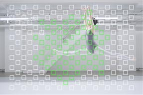

小汽车篇
普通微单相机 VS 4D对焦相机
对于移动中的被摄物，与普通微单相机相比，具备4D对焦功能的相机，可以实现快速精准，且持续稳定的跟踪对焦。
宽广的对焦区域、快速精准的对焦和持续稳定的跟焦，4D对焦功能，提升了相机在拍摄移动物体时的连拍成功率。
普通单反/单电相机自动对焦点分布
4D对焦相机对焦点分布
179点相位检测自动对焦点几乎覆盖整个取景画面*1 (约92%），即使被摄物在画面（对焦点覆盖范围内）的角落，也可被迅速检测并准确对焦。
相机通过感知画面中物体的位移，预判物体下一步的位置并对焦，期间所有的对焦点都在工作，以便迅速反应。宽广的覆盖范围，
大幅的移动也能轻松掌握。
*1. ILCE - 6000 ILCE-5100
相位检测自动对焦和对比度检测自动对焦相结合的“增强型混合自动对焦”，快速有效地引导镜头对焦被摄主体。配合BIONZ X影像处理器，快速地读取并处理数据，进一步加快了对焦速度，可达到约0.06秒*2。
*2 . ILCE - 6000，使用APS-C影像传感器的微单TM数码相机。CIPA方针依据内部的测量方法，使用E PZ 16-50mm F3.5-5.6 OSS镜头并关闭预先AF情况下。2014年2月12日，索尼调查
相位检测自动对焦和对比度检测自动对焦相结合的“增强型混合自动对焦”，快速有效地引导镜头对焦被摄主体。配合BIONZ X影像处理器，快速地读取并处理数据，进一步加快了对焦速度，可达到约0.06秒*2。
*2 . ILCE - 6000，使用APS-C影像传感器的微单TM数码相机。CIPA方针依据内部的测量方法，使用E PZ 16-50mm F3.5-5.6 OSS镜头并关闭预先AF情况下。2014年2月12日，索尼调查
传统跟踪对焦在半按快门和按下快门的这段时间里，对焦系统没有继续跟随运动物体。在这段短暂的时间里，对焦平面的位置没有改变，但被摄主体仍在运动。如果它的运动速度较快，而拍摄的景深又比较小的话，照片就容易模糊。这个时候，预测跟焦就开始发挥它的作用了。
优化的自动对焦算法为目标对象的下一个动作做出快速预测，在按下快门时物体所在的位置准确合焦。AF跟焦性能更强，移动较快的对象也能持续跟焦，助您把握住决定性瞬间。